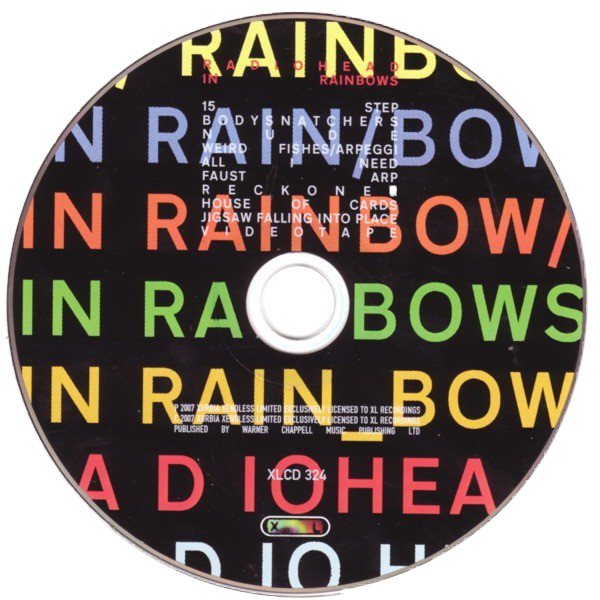

The song Videotape has been described
as Thom Yorkes favorite from the 2007 Radiohead album,
In Rainbows. The artist explains, it has an unexplainable substance
to it, making it one he often likes to open live shows with. However,
during a performance in 2008, fans were shocked to see Yorke struggle with the opening of the tune
four seemingly simple quarter notes. As explained by Vox, Berklee music professor Erin Barra,
and fan Warren Lain, the songs complexity lies in a sort of subtle syncopation where the drums and piano intentionally play off beat..